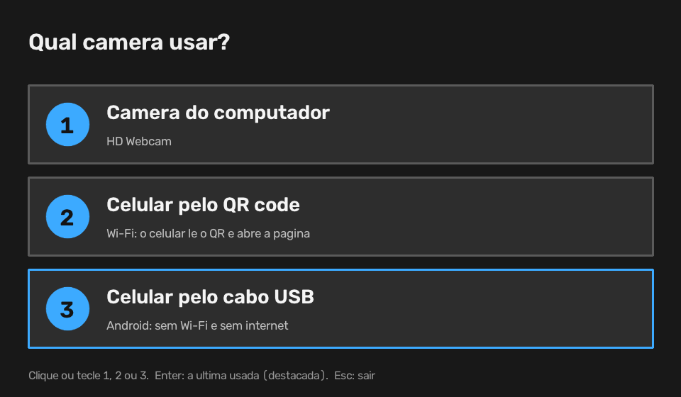

Instalar no PC
-
Baixe o ZIP
Pelo botão Baixar o Olhar-mouse (ZIP), no alto da página.
-
Extraia numa pasta
Botão direito no arquivo › Extrair tudo…. Por exemplo, em
Documentos\olhar-mouse. -
Dois cliques em
instalar.batEle instala o Python 3.12 se faltar (pelo winget do Windows), prepara um ambiente só do programa, baixa as dependências e cria o atalho Olhar-mouse na Área de Trabalho e no menu Iniciar. Na primeira vez leva alguns minutos.
-
Abra pelo atalho e calibre
Escolha a câmera, olhe para o ponto, feche os olhos até o bipe e siga 13 pontos com o olhar e aponte o nariz para mais 5. Cerca de 1 minuto, só na primeira vez ou quando a câmera muda.
Se o Windows avisar que protegeu o computador ao abrir o .bat, toque em
Mais informações › Executar assim mesmo: o arquivo é texto, dá para ler o que ele faz antes.
Para remover, use desinstalar.bat e apague a pasta.
Três jeitos de ligar a câmera
Câmera do computador
A webcam do notebook ou uma câmera USB. Câmeras virtuais, que não filmam o rosto, não aparecem na lista.
Celular pelo QR code
O PC mostra um QR code; o celular, no mesmo Wi-Fi, abre a página e envia a câmera frontal. Não precisa instalar nada no celular.
Celular pelo cabo USB
Android ligado no cabo, sem Wi-Fi e sem internet. Precisa da Depuração USB ligada uma vez; a página abre sozinha no celular.
No Android 14 ou mais novo, o próprio celular pode virar webcam pelo cabo: na notificação “Carregando via USB”, escolha Webcam. Ele aparece como câmera do computador.
Gestos
| Gesto | Ação |
|---|---|
| Olhar para um ponto da tela | move o segundo ponteiro |
| 2 piscadas lentas com os dois olhos | clique direito |
| 2 piscadelas lentas (só um olho fecha) | clique esquerdo |
| Um olho fechado e o outro pisca 2 vezes devagar | clique esquerdo |
| F9 | pausa ou retoma |
| F10 | refaz a calibração |
“Lenta” é olho fechado entre 0,3 e 1,5 segundo. Piscadas normais, que são rápidas, são ignoradas, e enquanto o olho está fechado o cursor fica parado: o clique cai onde você estava olhando. Com um olho só: 2 piscadas lentas = clique direito, 3 = clique esquerdo.
Quem usa óculos
O detector continua achando olhos e íris através das lentes. O que muda é a medida de “olho aberto”: a armação e o reflexo deslocam a estimativa das pálpebras. Por isso a calibração mede o seu olho aberto e fechado. Basta calibrar usando os óculos. No menu do ícone, Uso óculos filtra ainda mais os reflexos da lente.
Privacidade
- Tudo roda no seu computador. Nenhuma imagem vai para a internet.
- Pelo QR code, a imagem vai do celular direto para o PC pela rede da casa, protegida por HTTPS e por um código aleatório no endereço.
- Pelo cabo, a conexão nem sai do cabo.
Limites
Uma câmera comum acerta o olhar com erro de alguns centímetros na tela: dá para clicar em botões e ícones, não em alvos minúsculos. Aumentar a escala do Windows ajuda. Virar um pouco a cabeça também move o cursor, o que serve para ajustes finos.